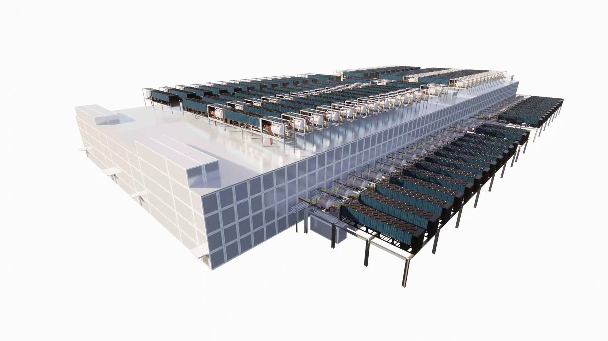
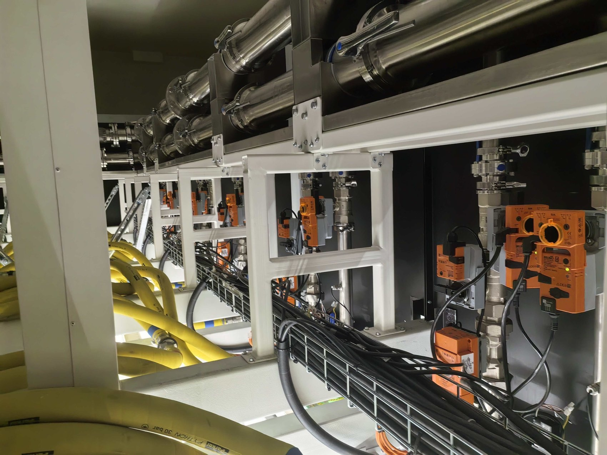
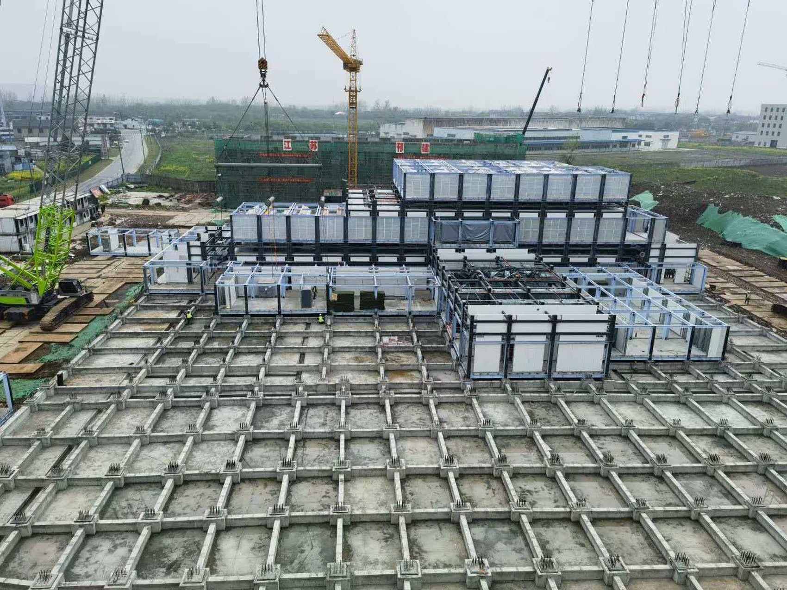
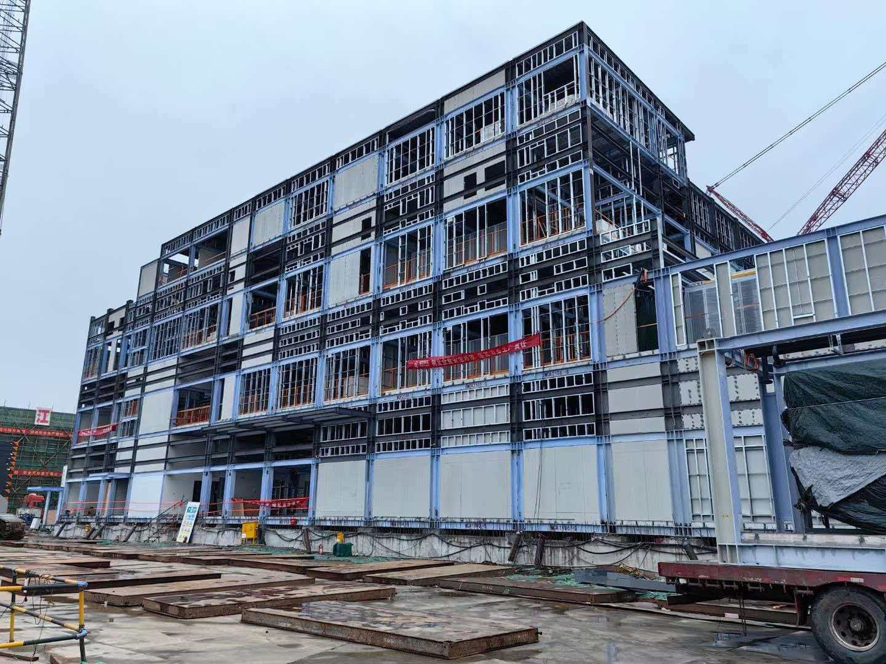
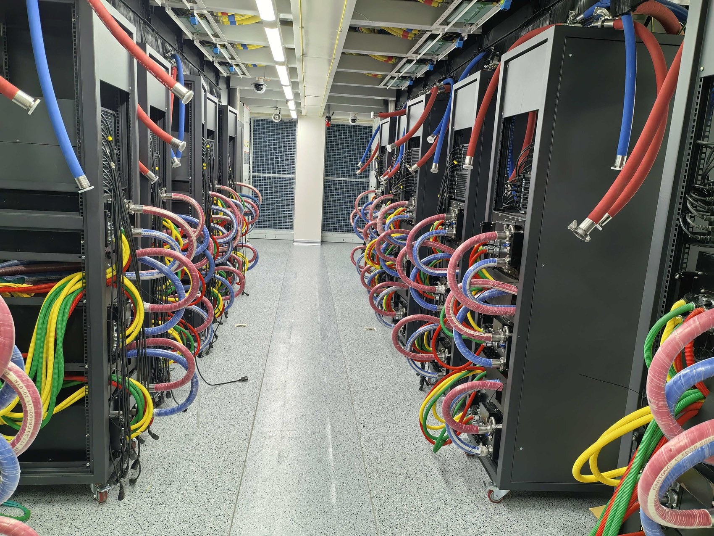
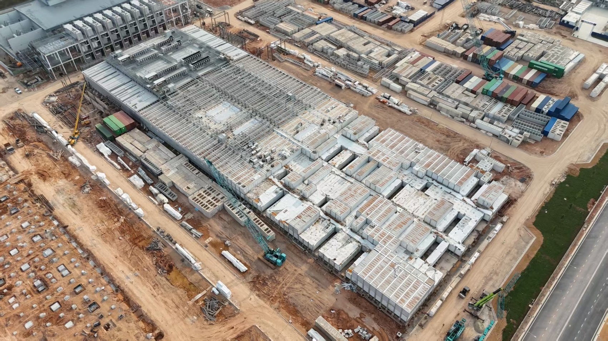

Peer-referenced whitepapers, structural engineering analyses, and operational blueprints on next-generation AI data centres, liquid cooling physics, and Japanese regulatory execution.

Featured Whitepaper · 2026A definitive 20-page technical paper on why prefabricated building modules deliver gigawatt-scale AI capacity, how they differ from steel frames and ISO containers, structural calculations under Japan's Article 6-3 Tekihan, and why Grid Apex adopted two-level vertical stacking for its Japanese multi-storey AI campus.
The full 20-page engineering study covering the 3 modular families, Japanese seismic importance factor 1.5, and multi-storey stacked data halls.

Thermal MEPDirect-to-chip liquid cooling at 700–1,000 W per accelerator requires 30-bar pressure tolerance. Why factory jigs eliminate field leak risks.

Seismic & CodeHow prefabricated structural modules obtain Type Conformity Approval (型式適合認定) and resolve the critical path under severe trade scarcity.

ArchitectureWhy two levels double megawatts per hectare while avoiding non-linear seismic penalties, complex smoke extract, and multi-year reviews.

Compute NodesIT turns over every 2–4 years while buildings last decades. Decoupling floor loading, power paths, and cooling manifolds at the module boundary.

Site EPCIn prefabricated modular construction, the critical path runs through factory line and foundations in parallel, converging at the crane.